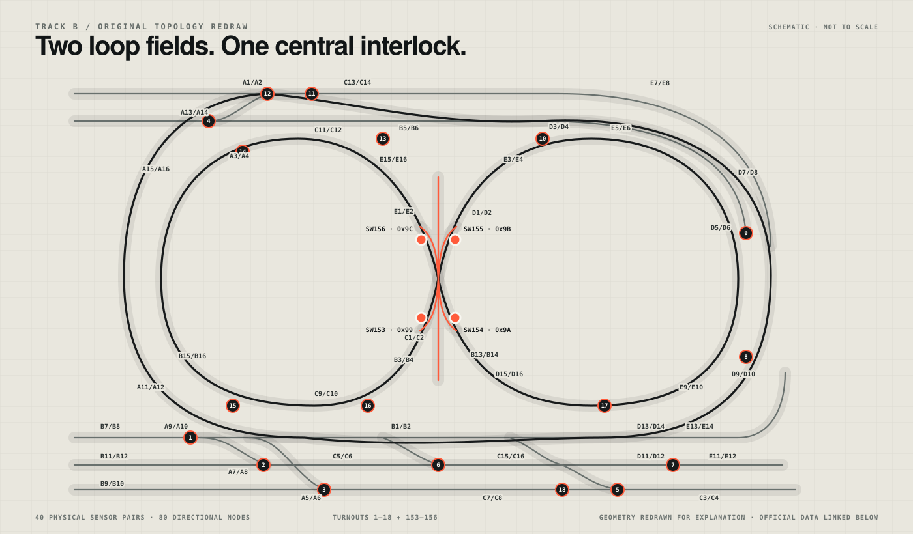

Observe
Track sensors report discrete events from the physical layout.
sensor eventA portfolio presentation of a completed CS452/652 railway-control project: two trains, live track events, turnout decisions, conflict handling, and operator recovery—translated into an interactive browser model.
00 / PROJECT
The underlying course implementation lives in the team’s original course repository. This separate showcase does not replace or re-implement that system; it explains the work through architecture, recorded evidence, and a deliberately labeled web simulation.
01 / SYSTEM
The showcase follows the project’s operating loop: observe the railway, attribute an event, update train state, evaluate conflict, then issue or await an action.
Track sensors report discrete events from the physical layout.
sensor eventNew observations are associated with the current train state.
train stateDirection, proximity, and turnout state inform the next move.
conflict policySpeed, turnout, reroute, or operator-hold changes system state.
commandSTATE / 01
Independent speed and direction states are reconciled against shared track.
Concurrent controlINPUT / 02
Reservation owner and generation identify a train; unreserved rising events stay unattributed rather than being guessed.
Fail-closed observationTRACK / 03
Switch state is visible before a train reaches a branching decision.
Straight / curvedSAFETY / 04
Head-on risk stops both trains; a following conflict holds the rear train until movement authority returns.
Following / head-on / authorityRECOVERY / 05
The project console can safely stop and replan from CURRENT, cancel, remove, or block track from dispatch.
Operator in the loopBOUNDARY / 06
The film documents the physical demo. The browser model explains behavior and is labeled as simulation.
Clear provenance02 / CONTROL DESK
A browser-only model derived from the project author’s demo description. It is not connected to the physical railway and does not claim to reproduce measured timing.
Swipe horizontally to inspect the complete Track B map ↔
SYS Railway showcase model ready.
NOTE Type help to list simulation commands.
Model boundary: command names, timing, paths, and sensor positions on this page are explanatory simulation data. They are not physical-track telemetry or a safety validation.
03 / RECORDED DEMO
AUTHOR-DESCRIBED SCENARIO
The recording documents two trains leaving their starting positions without assigned destinations. Speeds and upcoming turnout choices vary as the run develops.
Two trains begin with independent, variable speeds.
A switch changes before the approaching train reaches it.
A following train waits when the shared segment is not clear.
Both trains stop and wait for operator intervention.
The terminal can reroute or remove a train to release the hold.
Behavior summary supplied by the project author; the recording is presented as project evidence, not independently certified test data.
04 / TRACK REFERENCE
Official course diagrams ground the project in a finite graph of sensors, branches, and turnout states.
Swipe horizontally to inspect all sensors and turnouts ↔

Open the public course data using the link below.
GRAPH VIEW
The course files describe directed nodes and edges with distances in millimetres. This original redraw and the simulator reduce that topology to a legible explanatory view.
Topology facts derived from public University of Waterloo CS452/652 course data. The schematic is an original, not-to-scale adaptation; it does not imply University endorsement. Course solution code is intentionally not published here.
05 / TECHNICAL NOTES
Separating implementation, evidence, and explanation keeps the portfolio accurate.
The completed train-control source stays in the original course repository and remains the source of truth for actual behavior.
REAL SYSTEMThe embedded film shows the physical two-train demonstration described by the project author.
PHYSICAL RUNThe interactive desk is deterministic presentation software with simulated timing and adapted geometry.
WEB MODELreroute registers a CURRENT-based replacement after a safe stop; go submits it. Without a trusted pose, the project stays fail-stopped. Operator-declared remove releases the active plan and authority.A safe subset of the console vocabulary.The dispatcher models staged, waiting, preparing, running, braking, arrived, failed, and traffic-hold states rather than a single “moving” flag.
Rolling reservation windows are updated by generation and include the reverse node to prevent opposite-direction physical overlap.
dispatch, go, trips, reroute, cancel, remove, block, and trackview are present in the completed project branch.
Software route simulations exist, while portions of physical geometry and calibration remain marked provisional, pending, or retest in the repository.
END / CLEAR SIGNAL